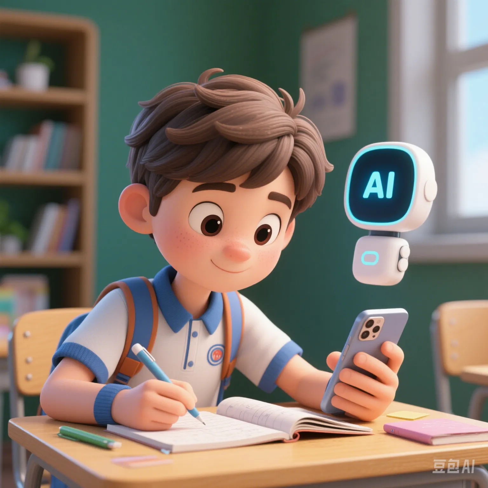

DeepSeek Is Overused by Middle - School Students: How to Prevent AI Tools from Becoming Cheating Weapons?
PeaceLove.Top Insights :2025-04-17
“I finished my homework with DeepSeek, and my teacher even praised me for my progress.”
This statement comes from an anonymous submission by a ninth - grade student. On various campus social platforms, using AI for writing, problem - solving, and essay - generating has become an “open secret”. In particular, domestic large - scale AI models such as DeepSeek, Kimi, and Tongyi Qianwen have already entered classrooms, parent groups, and students' mobile phones.
However, what's worrying is that AI tools, originally intended as learning assistants, are turning into cheating weapons.
“AI helped me write an entire chemistry experiment report.”
“I copied an English essay from ChatGPT and got the first place in the class in the first mock exam.”
“I uploaded the math final question, and it directly gave me the answer with steps.”
Similar posts are countless on Xiaohongshu, Tieba, and QQ student groups. Some accounts even offer tutorials like “Recommendations for GPT model queries” and “Special question templates for the high - school entrance exam”, forming a complete gray - industry chain for AI cheating.
Concerns of the Education System: Fairness Is Being Crushed by Technology
- Distorted teacher feedback: When students submit content generated by AI, teachers can't judge their real level of mastery.
- Outstanding students are wrongly accused: The papers of students who work hard are suspected of being “written by AI”.
- Ineffective assessment system: Daily assessment indicators such as homework and weekly tests have completely “failed”.
A head - teacher of a key high school admitted, “The credibility of exams that we've built over decades may be destroyed by AI overnight.”
Deeper Problem: Are We Cultivating the “Question - Asking Ability” or “Copying Answers”?
When AI can write high - scoring essays and solve problems accurately within seconds, students may get lost:
- Why think on my own? AI is faster and more accurate anyway.
- Why practice repeatedly? AI remembers better than I do.
- Why understand the principles? Just ask the model.
This is not just “laziness” but cognitive regression under the illusion of technology.
Regulation + Education: Prevent AI from Becoming a “Cancer”
1. Technological “Anti - Detection” Countermeasures
- Teachers can use “AI content recognition tools” to detect cheating (such as GPTZero, Turnitin).
- Platforms should open an “education mode”: Mark AI - generated content and use watermarks for tracing.
2. Educational “Proactive Responses”
- Encourage “human - machine co - creation” rather than “full - power ghostwriting”.
- Guide students to use AI for “auxiliary note - taking, outline expansion, wrong - question analysis”, etc.
3. Assessment: “Return to Oral and Process - Oriented”
- Increase oral reports, on - the - spot Q&A, and practical demonstrations.
- Design interdisciplinary questions and open - ended tasks that AI can't easily answer.
The Real Educational Goal: Let AI Help You Progress, Not Take the Exam for You
If AI is an “infinite cheat code”, how you use it determines whether you're a cheater or a self - evolver.
Future elites may no longer be hard - working students who rote - learn and work blindly. Instead, they'll be **“human - machine integrated talents”** who can ask precise questions, think critically, and grow in synergy with AI.
Conclusion
Technology is not the enemy; abuse is the problem.
AI will surely enter schools. Those who dare to explore, are good at using it, and stay true to their original intentions can avoid being enslaved by tools and truly become the creators of this intelligent era.